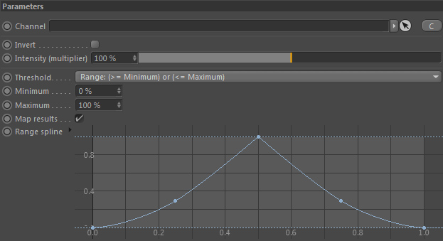
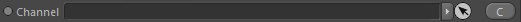
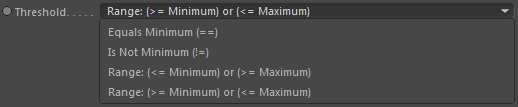
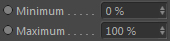
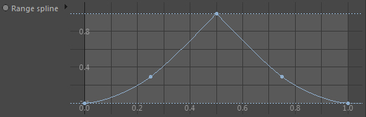

Parameters
Parameters

Channel

The channel to sample (read the value from).
Threshold

The threshold defines the range (set with 'Minimum' and 'Maximum') type that the original grid value is defined in.
Equals Minimum (==)
If the grid value is the same as the Minimum value, the base result of the constraint will be 100%. Otherwise it is 0%.
Is not Minimum (!=)
If the grid value is NOT the same as the 'Minimum' value, the intensity of the constraint will be 100%. Otherwise it is 0%.
Range (<= Minimum) or (>= Maximum)
If the grid value is smaller or equals 'Minimum' or is bigger or equals 'Maximum', the result will be 100%. Otherwise it is 0%.
Range (>= Minimum) or (<= Maximum)
If the grid value is within 'Minimum' and 'Maximum' the result will be of the constraint will be 100%. Otherwise it is 0%.
The 'Range spline' setting applies here though.
Minimum

The input range minimum for the sampled grid value. It is given in percent (%) for it uses the Channels Minimum value.
A value of 0% means exactly the minimum value of the channel.
Maximum
The input range maximum for the sampled grid value. It is given in percent (%) for it uses the Channel's Maximum value.
A value of 100% means exactly the maximum value of the channel.
Map results
If activated, the result will be mapped to an intensity range of 0.0 and 1.0 using the range spline.
Otherwise the result will directly be used and may not necessarily be in the unit range.
Range spline

If results are mapped, this spline curve defines the new mapping.